3D printing-group
3D printing assignments
Here is where i will but the models done by the group.
Allocation of work
- Anthony:Wall thickness
- Caleb:Clearnace
- Quan Yao:Bridging
Quan Yao
So well, i am doing bridging which the property of when there is a structure that is.
At first , For the bridging model, i had an idea where on top of the length of the bridging, i was planning to also test if the height of the model had any impact on the bridging of the model. For this, i did it where the i would test the different lengths of bridging all at the height of 40mm, and then all the bridging at all the same lengths but this time at a height of 80mm. However, if i wanted to fit it into the dimensions of the ultimaker 2+, i had to make it so that the structures that test bridging for the higher heights overlap the structures bridging at lower heights.
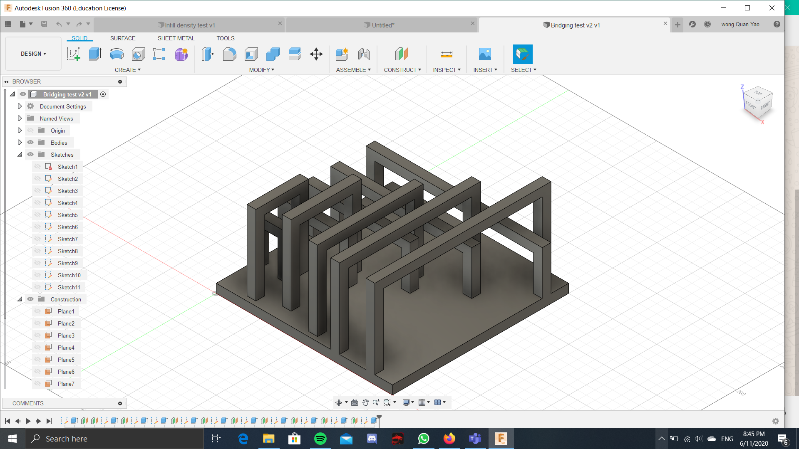
However, this model would not fit within the limitations of the assignment. Therefore, i had made another model, that would fit within those limitations. This one is a smaller model that does not factor in the height of the model, and only factors in the length of the bridging.
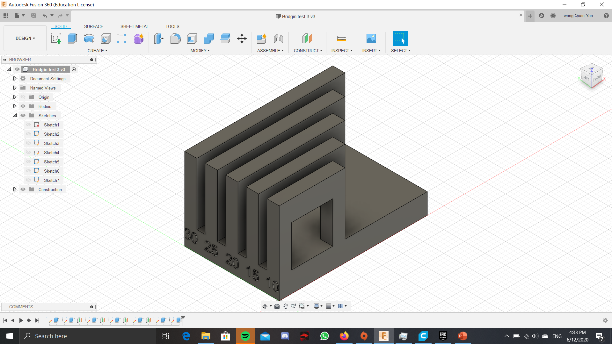
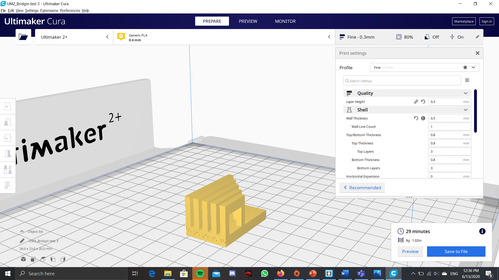
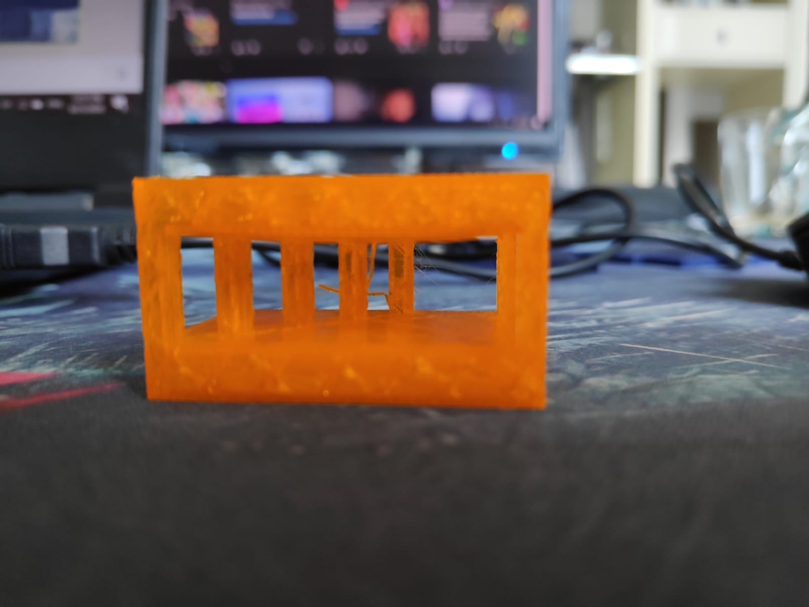
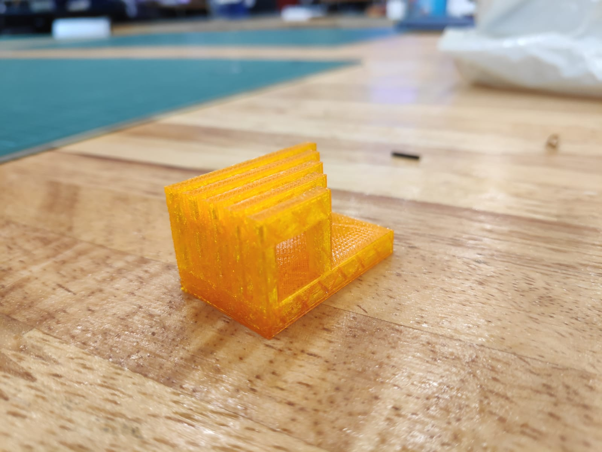
I have managed to print out the bridging test from above, with infill density of 20% and layer height of 0.2mm> The print turned out pretty good, as in there was no obvious bridging, or there wasn't any structures that was unable to be printed. However, for the length of 30 and 25mm, the first few bottom layers do have a tinsy bit of fibers coming out, but not too much and the general structure is still there.
Click on these files for the 3D printing tests: The weirder looking one(V1) and The one that was printed.
Anthony
For this group project, I am working on wall thickness.
I have picked a range of values for thickness, ranging from 0.5mm to 3.0mm, to test the lowest limits and by what thickness I should stop at for small models. This was the original design:
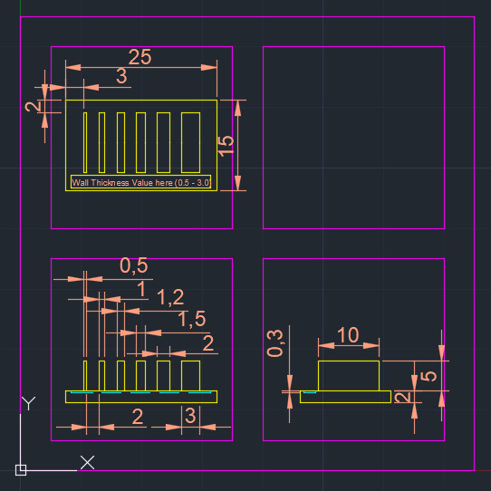
However, halfway through I realized that 3.0mm might be too thick, so I had reduced the maximum thickness to 2.0mm. In doing so, I increased the width to 20mm and the length to 30mm to ensure sufficient spacing between each wall.
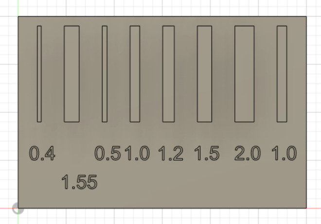
I have also tested for accuracy of the wall thickness up to 2 decimal points, but I wouldn't know the results until it is printed.
I have also tried to test for maximum height possible before failure for 1.0mm. However, I hypothesize that I would not be able to test the limits for this part due to dimensional constraints.
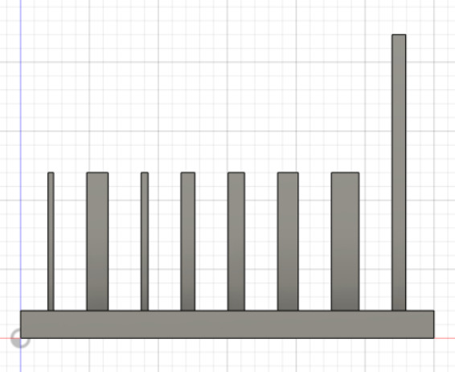
When I sliced the model, I saw that 0.5mm is still sliceable, so I tried to go for the lowest possible it can go, and found out that it cannot slice at 0.4mm.
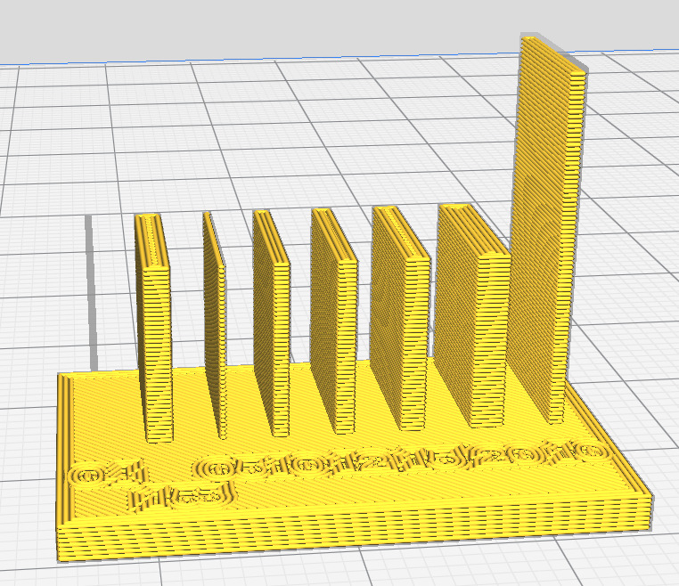
I have also tested the values between 0.4mm to 0.5mm, and 0.41mm is the absolute minimum that we can go before cura is unable to slice it. The final model will have 0.41mm as its minimal wall thickness.
After printing, I found out that the size of the print is too small to see the effects of wall thickness. however, i notice that new txt added :"for a wall height of 10mm, all wall thickness below 1mm are easy to bend, whereas the wall thickness below 2mm for the same height are slightly harder to bend, with 2mm being unbendable. For the wall thickness 1mm at 20mm height is bendable. however, it did not break as I expected.
(wow, you cant see the numbers i wrote on it at all)
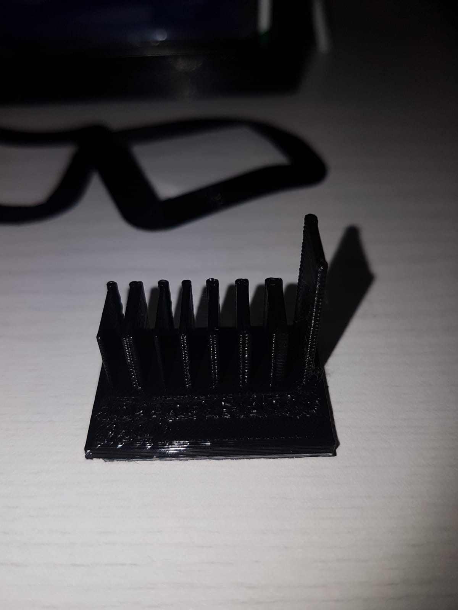
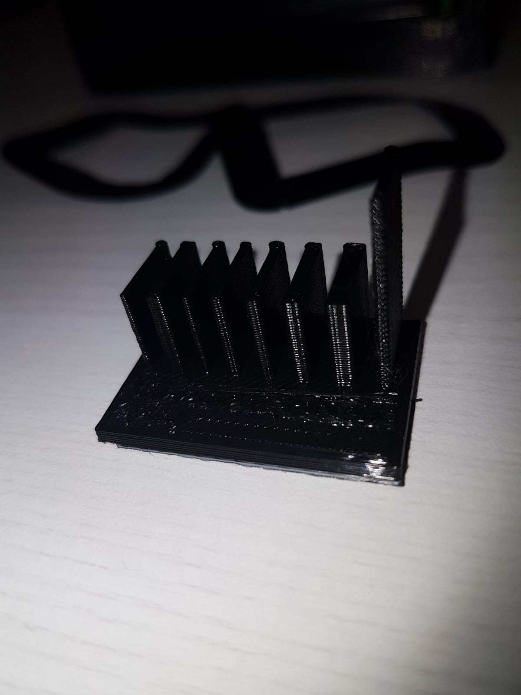
You can access the file here: Wall Thickness v19
Caleb
For my design,I am testing the clearance of the 3D printer.Therefore, my inspiration was toys for ADHD kids, and hence I created a variant of a fidget cube and fidget spinner, for others to curb their ADHD. To test for clearance i adjusted the size of the hole in the ball by increments of 0.1mm from 1 to 1.6 mm.


After exporting the file to the ultimaker cura software, I had begun slicing the object to obtain the timing and how the object would look like during printing. While slicing, i realised that i had still had to create a base for the ring for the balls the object to rest on, hence i used the support function to create the supports only at the base to ensure the stability of the object and not allowing it to fall and crumble.


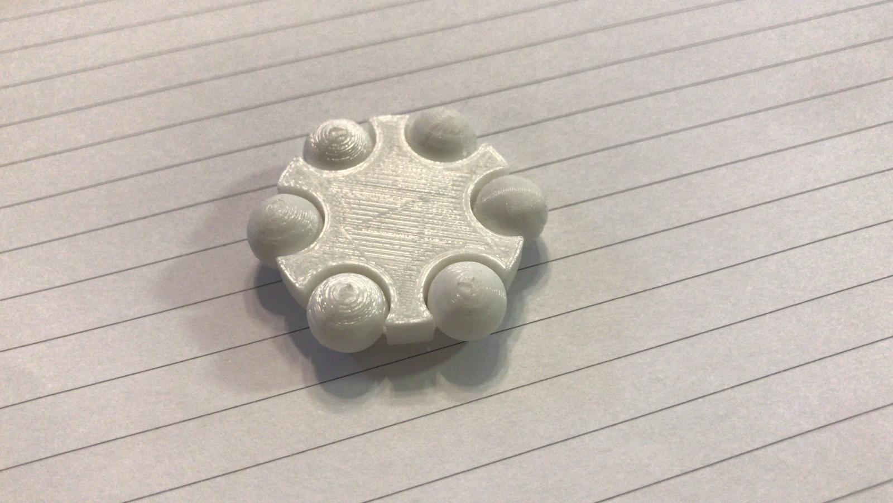
After printing
The image above shows how it looks like after printing, and the results were that for the clearance of 0.1 to 0.4mm were almost unable to rotate,with crazy amounts of resistance acting against it were on the verge of breaking the rod and 0.4 causing the least resistance. While the clearance of 0.5 and 0.6mm were able to easily rotate and able to slide along the smaller rods of the object. Hence, this shows that for the best minimal clearance for a object would be within o.4mm to 0.5mm for a tight fit, for a rather looser fit, 0.5mm would be more recommended. I am not sure but my numbers on the model was not able to be printed out as it was probably too small.You can acess the file here:Clearance 2 v4.f3d(F3D file) Please click on the links below to return back to the original site:
Quan Yao: https://mtgbootz.github.io/EP1000/V2.html
Anthony: https://kuudan.github.io/EP1000/index.html
Caleb: https://caleb-yeow.github.io/Calebs-website/web/index.html